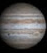

Júpiter
Júpiter é o maior planeta do Sistema Solar, tanto em diâmetro quanto em massa, e é o quinto mais próximo do Sol. Possui menos de um milésimo da massa solar, contudo tem 2,5 vezes a massa de todos os outros planetas em conjunto. É um planeta gasoso, junto com Saturno, Urano e Netuno.

Curiosidade de Júpiter
O planeta conta com o campo magnético mais poderoso do Sistema Solar, e em algumas regiões de sua atmosfera, ele chega a ser 20 vezes mais forte do que o da Terra; Júpiter é um dos cinco planetas que podem ser vistos a olho nu aqui da Terra, e é o quarto objeto mais brilhante no céu depois do Sol, da Lua e de Vênus.